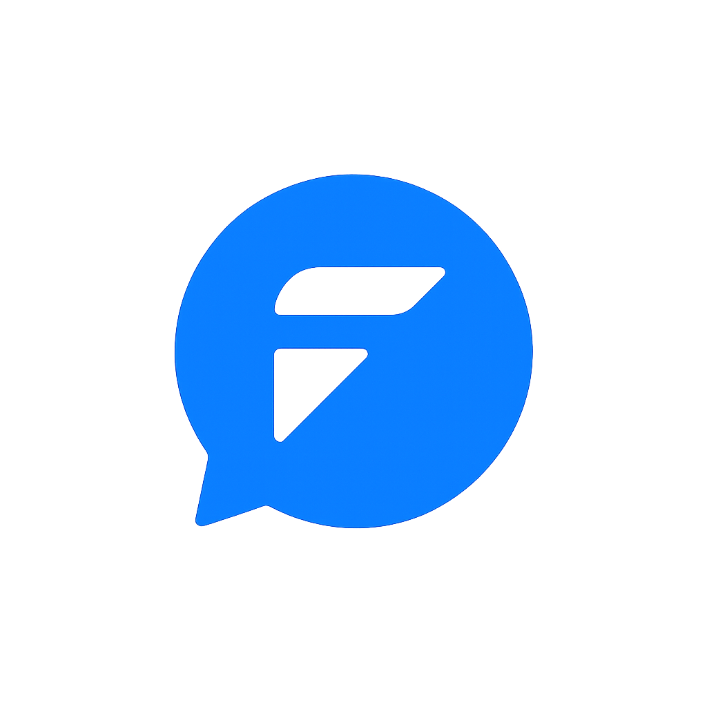

Brian MEDS
Model preview unavailable
Brian Meds
Explore organ systems, review notes, and study with a focused anatomy workspace.
Brian Meds Project

Brian Meds is developed, maintained, and managed under FhETCH.online, a digital health and technology initiative focused on developing educational, clinical, and healthcare technology solutions.
Brian Meds is an educational medical learning application intended primarily for students and professionals involved in health sciences and medical education.
The application is designed to support learning, revision, teaching, and independent study. It is not intended to replace formal medical training, clinical supervision, institutional guidelines, or professional clinical judgment.
Design and engineering support for the Brian Meds medical learning experience is provided through the FhETCH.online development initiative.
The project is in active development. Healthcare professionals, medical educators, developers, and 3D/model artists are welcome to contribute to the expansion of the platform.
Potential contributors include:
Interested contributors may contact the project developer for contribution requirements and onboarding.
Lead Developer: Brian Ngesa
Phone: 0717333987
Email: 254healthyfamily@gmail.com
Brian Meds is designed as a medical education and study-support platform. Its purpose is to organize medical knowledge into structured systems, organs, subjects, notes, and interactive learning resources.
The application should be used as a supplementary educational resource and not as a substitute for qualified teaching, institutional protocols, textbooks, clinical guidelines, or professional medical advice.
This application is intended for educational and study use. All content, design, software, branding, educational materials, and model references remain the property of the project owners unless otherwise stated.
Commercial use, redistribution, reproduction, or modification of proprietary project materials requires prior written authorization from the project owners.
Distribution of the software, source code, branding, educational notes, media, or model references must comply with the project's licensing and attribution requirements. Unauthorized sharing, resale, or redistribution of proprietary materials is not permitted.
The application is provided for educational purposes and is supplied on an "as-is" basis. No guarantee is made regarding completeness, accuracy, availability, or fitness for a specific clinical or professional purpose.
Brian Meds is managed by FhETCH.online.
FhETCH.online oversees the continued development, maintenance, organization, and expansion of the Brian Meds educational platform.